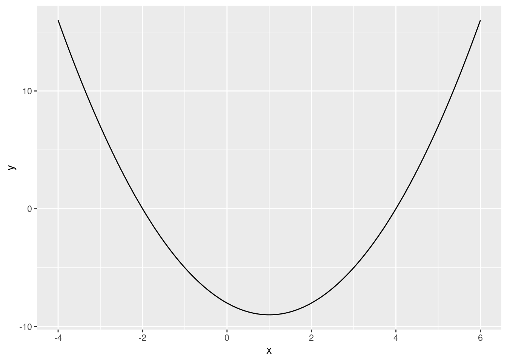

f <- function(x) {
y <- -8 - 2 * x + x^2
return(y)
}17 Univariate Unconstrained Optimization
In Chapter 16 we learned how to make our own functions. We learned how to write a function to calculate:
f(x) = -8 -2x +x^2
The function was:
In this chapter we will learn how to find the extreme point (maximum/minimum) of this univariate function (function with only one variable).
17.1 Plotting Approach
In Chapter 16, we also learned how to plot the function with ggplot(). We can get a visual view of the extreme point:
library(ggplot2)
x <- seq(from = -4, to = 6, length.out = 200)
df <- data.frame(x, y = f(x))
ggplot(df, aes(x, y)) +
geom_line()
From the plot we can see the following that the function achieves a minimum at x=1.
17.2 Analytic Solution
We could have found this number analytically using calculus. Let’s do that before doing it in R. The first derivative of the function is:
f^\prime(x) = -2 + 2x To find the extreme point of the function we find the value of x where f^\prime(x)=0. This happens when: -2 + 2x = 0 Solving for x yields x=1. To see if this is a maximum or a minimum we check the second derivative: f^{\prime\prime}(x) = +2 This is positive, so we know it is a minimum. A minimum at x=1 is exactly what we see in the plot.
17.3 Using Optimization
We will now use R to find the extreme point using optimization. We can use the optimize() function to find the minimum of a univariate function in R. To do that we need to specify first the function we want to minimize and an interval to search over. We specify the interval as a vector with two elements, the lower bound and the upper bound. We will use a wide interval of [-100,+100]. We also need to specify if we are looking for a maximum or a minimum. We do that with the maximum option and set it to FALSE when looking for a minimum:
optimize(f, interval = c(-100, 100), maximum = FALSE)$minimum
[1] 1
$objective
[1] -9We can see that we get the same result as the plot and the analytic solution. The minimum value occurs at x=1 and the value of the function is -9 at that point.
If you want to maximize a function instead, we need to set maximum = TRUE.
The optimize() function returns a named list. Suppose we assign the output of the optimize() function to f_min:
f_min <- optimize(f, interval = c(-100, 100), maximum = FALSE)
class(f_min)[1] "list"To extract the minimum from this list we can use f_min$minimum. The $ works for extraction with named lists the same way as with dataframes. To extract the value of the function at the minimum, we can use f_min$objective:
f_min$minimum[1] 1f_min$objective[1] -9